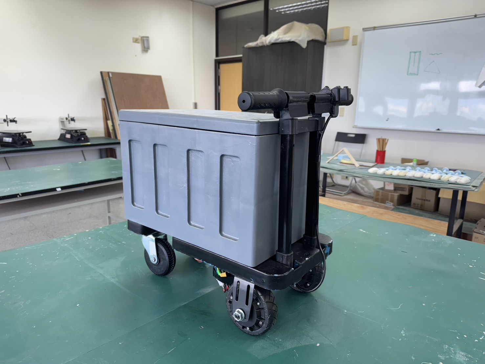
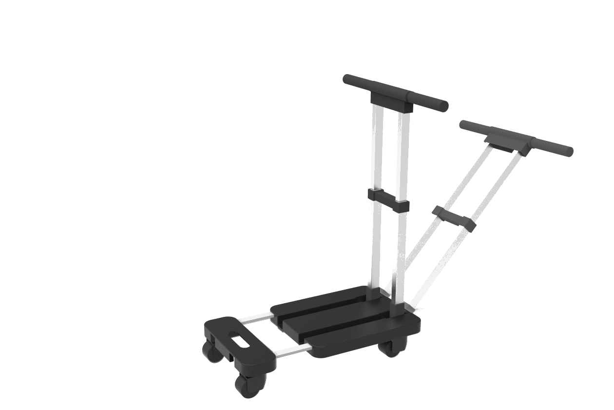
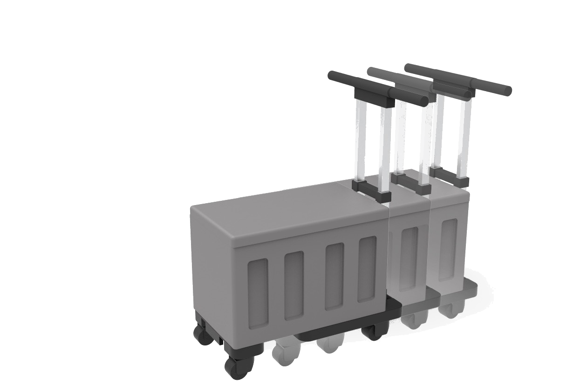
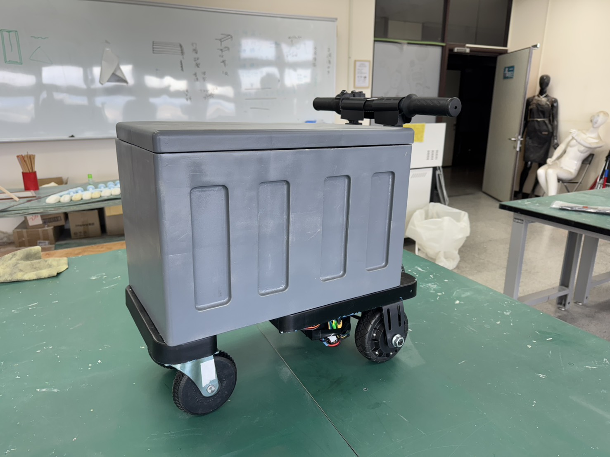

01 // CORE
單一核心功能
聚焦穩定的馬達推力輸出，不堆砌多段模式或感測系統，把可靠度與耐用度留給最重要的事。
在農業、工地與市集，推車仍高度依賴人力。當載重增加、地面不佳、長時間反覆搬運時，使用者需持續施加大量推力，導致體力快速消耗，甚至造成腰部、肩膀與手腕的職業傷害。現有電動／自走式設備又多半昂貴、笨重、操作複雜。
地野省力車以功能單一化為原則，把資源集中在最核心的需求——提供穩定、持續的推進動力，回到搬運工具最實際的命題：推得動、推得久。

聚焦穩定的馬達推力輸出，不堆砌多段模式或感測系統，把可靠度與耐用度留給最重要的事。
完整保留傳統推車握把與操作邏輯，拿了就能推，免訓練、免說明書。
無複雜模式，適合長時間戶外重載作業，維護門檻與成本俱低。
越野輪 + 低重心車架，農地、工地、市集等不平整地面皆可穩定推行。


依不同身形與情境調整高度，沒有多餘機構負擔。
低重心設計搭配越野輪，不平整地面也能穩定推行。
「電動輔助 × 人機協作」不是噱頭，而是有人機工程依據的省力方式。
電動輔助能依施力自動調整，長距離搬運中顯著降低肩部與腰部肌肉負荷，減少疲勞與職業傷害風險。
「人機協作」比全自動更能在保持直覺操作的同時，降低訓練成本與學習門檻——正是本車的核心取向。
| SPEC | 全電動／自走式 | 多功能電輔推車 | 地野省力車 |
|---|---|---|---|
| 操作門檻 | 高，需訓練 | 中，模式多 | 低，直覺上手 |
| 結構與維護 | 複雜、體積大 | 較複雜 | 簡單、耐用 |
| 價格門檻 | 高 | 中高 | 親民、聚焦核心 |
短時間多次推動滿載推車，場地多變，重視直覺操作與穩定性。
年長者或體力較弱者，重載時容易疲勞，需要穩定的省力支援。
不平整地面反覆搬運、工時長、負重高，排斥複雜操作。

在你熟悉的推車結構上整合電動馬達，於推行時提供穩定、持續的推力輔助——一樣的操作方式，卻能明顯省力。
不用。完整保留傳統推車的握把與操作方式，拿了就能推，免訓練、免看說明書。
農地、工地、市集等需要長時間、重載、且地面不平整的戶外搬運情境。
結構單純、沒有複雜模式或感測系統，維護門檻與成本都低，適合長期使用。
目前為原型驗證階段，歡迎預約試用、洽詢合作或索取進一步資訊。
NTUB · 創意科技與產品設計系